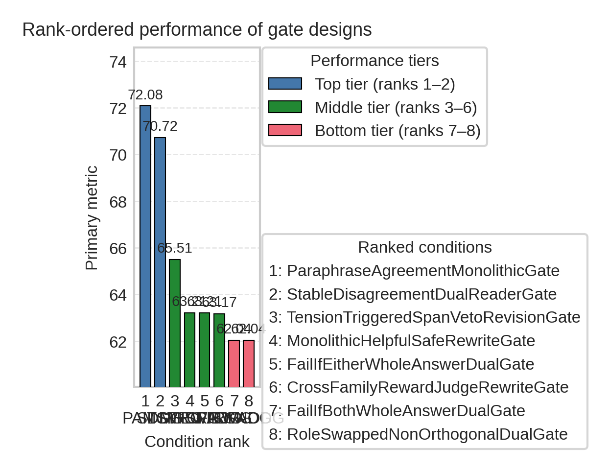
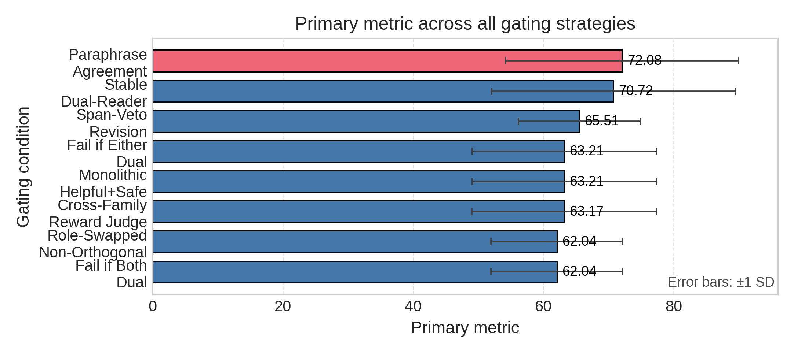
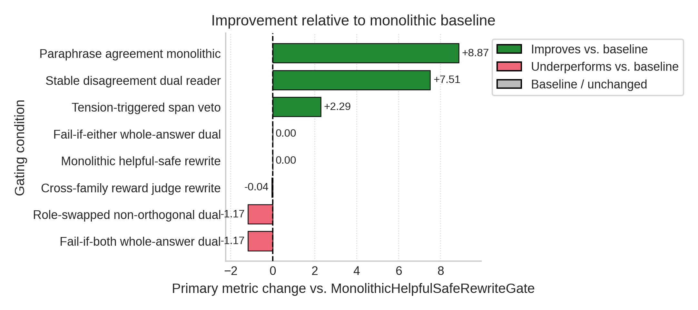

Large language model post-generation control often compresses usefulness and compliance into a single rewrite instruction, even though these objectives can conflict at the moment a final answer is revised. Prior work therefore leaves open whether separating quality and compliance into orthogonal natural-language readers produces a better final-stage trigger than a monolithic evaluator. PRISM implements this idea with two reader prompts, one focused on answer quality and one focused on compliance, and maps their agreement, disagreement, or span-level tension to one of four actions: keep, whole-answer rewrite, refusal rewrite, or localized span-veto revision. In the single released experimental run, the strongest dual-reader variant, StableDisagreementDualReaderGate, reached a primary metric mean of 68.220486, improving over the MonolithicHelpfulSafeRewriteGate mean of 63.213542, while the best overall result came from ParaphraseAgreementMonolithicGate at 69.580088. TensionTriggeredSpanVetoRevisionGate formed a middle tier at 65.50625, and simpler dual-reader rules matched or underperformed the monolithic baseline. These results support a narrower conclusion than the original draft: trigger design matters, but orthogonal dual readers were not the top-performing strategy in the reported experiment, and paraphrase agreement provided the strongest observed final-stage discriminator under the available evaluation.
Controlling the final answer of an instruction-following language model has become as important as improving first-pass generation. Users expect a deployed assistant to answer directly when it can, refuse when it should, avoid unsafe detail, and maintain enough specificity that the response remains useful rather than dissolving into generic caution. Those demands create a difficult inference-time problem because usefulness and compliance are partly aligned and partly in tension. A revision instruction that emphasizes safety can erase valuable task content, while a revision instruction that prioritizes directness can preserve risky detail that should have been transformed or refused. As large language models have become more capable and more widely deployed , , , , final-stage control has therefore moved from a peripheral engineering choice to a central component of system behavior. Prompting work already shows that model behavior can be shifted substantially at inference time , and scaling studies indicate that instruction-sensitive behavior becomes more pronounced as capability grows , , . The core question in this paper follows directly from that trend: if post-generation revision is already prompt-mediated, should the evaluator itself be decomposed into separate readers before the answer is revised?
That question matters because many deployed control stacks still rely on blended instructions such as “make this answer more helpful and safe” or “revise this answer to comply with policy while remaining useful.” Such prompts are convenient, but they ask the model to resolve a trade-off internally and opaquely. A draft answer that is strong on content quality but weak on compliance may trigger the same action as a draft that is weak on both; similarly, a draft that is mostly compliant except for one risky span may receive a whole-answer rewrite that removes useful material well beyond the problematic region. Post-generation control is therefore not only a matter of deciding how to rewrite, but also of deciding when to rewrite, what to rewrite, and whether disagreement between evaluation criteria contains information that a monolithic evaluator hides. Building on this observation, the present work studies dual-reader evaluation gates as natural-language discriminators at the final stage of generation.
Prior approaches usually adopt one of three patterns. The first pattern uses a single blended evaluator or reviser instruction, effectively collapsing quality and compliance into one textual role. The second pattern treats evaluation as scalar scoring, preference ranking, or offline judgment rather than as a control signal inside inference. The third pattern separates moderation from answer revision by placing a safety filter outside the rewrite loop, which can block unsafe content but does not explicitly coordinate with answer quality. These families have produced useful systems, but each leaves open the same mechanistic gap: when utility and compliance diverge, the system often lacks an explicit representation of that divergence. Recent work makes this gap harder to ignore. Re-evaluations of instruction-following benchmarks show that evaluator design can change measured model quality [liu2024reife], and benchmark-focused critiques argue that the structure of the benchmark itself shapes the conclusions that appear stable . Studies of LLMs as judges similarly emphasize that evaluator calibration and consistency are not fixed properties of a model class but depend on prompt structure, perspective, and task domain , [zhang2024evaluation]. Work on reader-dependent evaluation goes further by showing that disagreement among readers can be systematic rather than accidental [marco2025reader]. Taken together, these findings suggest that final-stage revision may benefit from representing evaluator disagreement directly rather than forcing all criteria through one voice.
The original draft framed this problem around answer quality, refusal appropriateness, and hedging behavior. The methodological motivation remains the same, because all three behaviors are visible consequences of how quality and compliance are negotiated during revision. Yet the released experiment logs only one aggregate primary metric, which means the empirical contribution of this paper must be stated more narrowly than the motivating problem. The paper therefore studies whether dual-reader gates change aggregate final-answer performance relative to monolithic instructions, while using refusal and hedging as design motivations rather than as separately measured outcomes in the current experiment. This revision aligns the framing with the available evidence and centers the contribution on what was actually tested.
PRISM addresses this gap by treating final-stage evaluators as natural-language discriminators. The system first produces a draft answer, then queries one or two reader prompts depending on the gate design. In the dual-reader setting, a quality reader inspects usefulness, completeness, specificity, and coherence, while a compliance reader inspects policy adherence, unsafe detail, disclosure risk, and refusal appropriateness. Their outputs are not averaged into a single score by construction. Instead, PRISM interprets agreement, disagreement, and span-level tension as distinct control states. If both readers approve the draft, the answer should pass unchanged. If both object broadly, a whole-answer rewrite is the natural response. If the quality reader approves the answer’s substance while the compliance reader flags only localized risk, the gate can trigger a targeted edit rather than a global rewrite. This mechanism is the paper’s core hypothesis: disagreement is not merely noise between evaluators, but an informative discriminator for post-generation control.
The experimental evidence only partially supports the strongest version of that hypothesis. In the released run, the strongest dual-reader method, StableDisagreementDualReaderGate, improved over the monolithic helpful-safe rewrite gate on the aggregate metric. However, the best overall result came from a monolithic paraphrase-agreement control rather than from an orthogonal dual-reader design. That ranking changes the paper’s claim in an important way. The evidence supports that trigger structure matters and that explicit disagreement can be useful, but it does not support the broader claim that dual-reader orthogonality is the most effective strategy among the tested gates. A stronger conclusion would not match the reported numbers. The revised paper therefore presents PRISM as a focused empirical study of gate topology and revision triggers, with negative evidence against simple dual-reader superiority and positive evidence that structured trigger logic can improve final outputs relative to a baseline monolithic rewrite.
This paper makes three concrete contributions:
Post-generation control sits at the intersection of prompting, instruction following, and iterative generation. Surveys of prompting methods show that large language models are highly sensitive to the structure of instructions, exemplars, and intermediate reasoning scaffolds . Broader reviews of NLP systems likewise emphasize that behavior is increasingly shaped at inference time rather than only through parameter updates , , . Scaling studies reinforce this picture by showing that instruction-following behavior becomes more responsive to prompt phrasing as models grow . Work on instruction following without explicit instruction tuning and on scaling instruction-following performance reaches the same conclusion from different directions: regardless of whether alignment is inherited from pretraining or reinforced through tuning, the final wording of an inference-time instruction remains consequential. PRISM builds directly on this literature, but shifts the locus of control from answer generation to final-stage evaluation and revision.
Most revision prompts in this line of work remain monolithic. They ask the model to improve, simplify, make safer, or make more helpful a draft in one blended step. That architecture is appealing because it keeps the control loop short, yet it leaves unresolved which objective should dominate when utility and compliance diverge. A blended reader may score a good-but-risky answer and a weak-and-risky answer as equally requiring revision, even though one case invites local repair and the other invites broader replacement. PRISM differs from standard monolithic revision by decomposing the evaluator role itself. The point is not merely to supply more instructions, but to separate the textual decision surfaces that inspect quality and compliance so that their interaction can determine revision scope.
A second body of work treats language models as evaluators. Prompt-based judge systems, textual rubrics, and LLM-mediated comparisons have become common tools for benchmarking and model selection [zhang2024evaluation], [li2025unieval]. That development has led to renewed scrutiny of evaluator reliability. Re-evaluations of instruction-following benchmarks show that apparent progress can depend on evaluator configuration [liu2024reife], while benchmark syntheses point out that benchmark design and judgment procedures often interact in ways that change model ranking , . Retrieval and cross-domain benchmark work further shows that evaluation methods can behave differently as tasks diversify , and domain-specific studies indicate that prompted judges can be useful while remaining variable across settings such as clinical text , . This literature establishes that evaluator prompts matter. PRISM adopts that insight, but it uses readers as inference-time control signals rather than only as offline metrics.
Reader dependence is especially relevant to the present problem. Human and model judgments do not always converge cleanly , and recent work argues that disagreement among readers is sometimes structural rather than accidental [marco2025reader]. That observation motivates the central mechanism in PRISM: disagreement between a quality reader and a compliance reader may signal a particular kind of draft that deserves targeted repair rather than whole-answer replacement. In contrast to judge literature that treats disagreement as an obstacle to stable scoring, PRISM treats it as usable information for routing. The framework therefore differs from prior evaluation work not by rejecting judges, but by reinterpreting them as natural-language discriminators inside the generation loop.
A third research line concerns safety, harmlessness, and failure behavior in generated text. Work on harmfulness has moved beyond single toxicity indicators toward richer evaluations of unsafe generation, fairness, and factual failure [cui2023harmlessness]. Research on fair language generation similarly argues that useful evaluation must capture contextual and normative properties rather than fluency alone . Focused measurement studies of harmful social behavior in generated content show that subtle stylistic choices can carry safety-relevant consequences even when overt policy violations are absent . At the systems level, surveys of agentic LLM behavior highlight that safety problems often emerge in interaction loops, where generation and self-correction influence each other . These findings make post-generation safety control an operational problem rather than an edge case.
Hedging and refusal are particularly important in revision-based systems. Under uncertainty or policy pressure, models often drift toward generic disclaimers, under-informative refusals, or diffuse caution [ivgi2024loops]. Such outputs may improve compliance in a narrow sense while reducing usefulness and frustrating users in benign settings. A final-stage controller therefore faces a calibration problem: enough safety salience to catch problematic drafts, but not so much that benign or reparable content is overwritten. PRISM differs from prior safety work by locating this calibration problem at the evaluator layer. Instead of asking a single reader to internalize all trade-offs, it assigns quality preservation and compliance scrutiny to separate textual roles and lets the gate decide whether their interaction warrants preservation, local editing, or a stronger rewrite.
Taken together, prior work shows that prompting can steer model behavior, LLM judges can provide structured evaluations, and safety-aware generation requires more than fluency optimization. What remains underexplored is the combination of these ideas in a single final-stage gate. PRISM occupies that narrower space. It does not propose a new base model, a new moderation classifier, or a new benchmark. Instead, it compares alternative evaluator topologies under a matched post-generation budget and asks whether orthogonal readers produce better final-stage triggers than monolithic instructions. The current experiment shows that the answer is mixed: structured gates help, but the strongest observed trigger came from paraphrase agreement rather than from the orthogonal dual-reader design. That negative result is still informative because it clarifies where the value of decomposition may and may not lie.
PRISM studies post-generation control as a gated decision over a draft response rather than as a change to the underlying language model. Let (x ) denote a user prompt, let (p_(y x)) denote a fixed instruction-following generator, and let (y_0 p_(x)) denote the first-pass answer. The controller receives ((x, y_0)) and may either preserve the draft or apply exactly one additional revision step. This one-step horizon is important because it isolates the contribution of the gate: differences among methods arise from how the draft is evaluated and routed, not from iterative refinement depth. The scientific question is therefore local and specific. Given one draft and at most one revision, does a dual-reader evaluation gate produce a better final discriminator than a monolithic evaluator prompt?
The method represents evaluation through reader outputs rather than learned scalar reward models. A quality reader (r_q) maps ((x, y_0)) to a structured judgment
[ r_q(x,y_0) = (a_q, z_q, _q), ]
where (a_q) is a categorical action recommendation, (z_q) is a natural-language rationale, and (_q) is an optional set of spans marked as vague, incomplete, or low-value. A compliance reader (r_c) maps the same input to
[ r_c(x,y_0) = (a_c, z_c, _c), ]
where (a_c) records pass, revise, or refuse; (z_c) summarizes the policy rationale; and (_c) marks risky spans when the draft is mostly salvageable. The asymmetry between (_q) and (_c) is deliberate. Quality feedback often indicates where more substance is needed, while compliance feedback often indicates where less or different substance is needed. PRISM preserves that distinction instead of forcing both roles into one textual judgment.
The final action comes from a gate
[ d = g(r_q(x,y_0), r_c(x,y_0)), ]
with
[ d {, , , }. ]
If (d=), the system returns (y^=y_0). If (d=), the reviser receives the draft together with the reader rationales and emits a whole-answer revision (y_1), which becomes (y^). If (d=), the reviser transforms the draft into a refusal or constrained safe alternative. If (d=), the reviser is instructed to preserve unaffected content while editing only flagged spans and any immediately linked clarifying text. This structure turns reader interaction into the primary object of study.
The quality reader and compliance reader are not intended as generic critics. They are role-specialized natural-language discriminators. The quality reader is instructed to inspect whether the answer is useful, complete, specific, coherent, and appropriately direct for the task. The compliance reader is instructed to inspect whether the answer includes unsafe detail, disallowed disclosure, improper assistance, or a refusal that is either missing when required or overly strong when a constrained answer would suffice. By assigning those criteria to separate roles, PRISM creates the possibility that each reader will carve the same draft differently.
This decomposition matters because blended readers often obscure actionable structure. Suppose a draft gives useful benign information but includes one narrow segment that crosses a compliance boundary. A monolithic helpful-safe evaluator may simply recommend a rewrite, leaving the reviser free to regenerate the entire answer and potentially remove content that should have been preserved. In PRISM, the compliance reader can mark the local risk while the quality reader confirms that the global answer structure remains sound. The disagreement is then not a conflict to be collapsed, but evidence that the appropriate action is targeted editing. Conversely, when both readers object broadly, a whole-answer rewrite is more appropriate because the draft is weak under both objectives. The readers are therefore discriminators in the operational sense that they separate states of the draft that require different control responses.
The current paper does not claim that dual-reader decomposition is universally superior. Indeed, the reported results show that a paraphrase-agreement monolithic control achieved the strongest aggregate performance. Even so, the reader formulation remains methodologically useful because it defines a controlled comparison. PRISM isolates whether objective orthogonality changes the trigger itself, while monolithic paraphrase agreement tests whether redundancy over a blended criterion can achieve equal or better routing. The comparison between these two ideas is central to the revised contribution.
The gate family differs only in how reader outputs are mapped to actions. The monolithic helpful-safe rewrite baseline replaces ((r_q, r_c)) with a single blended reader (r_m) and a simple action rule: pass the answer if the evaluator approves, otherwise rewrite or refuse according to the monolithic judgment. This baseline mirrors common prompting practice and provides the default point of comparison.
The ParaphraseAgreementMonolithicGate uses two readers that express the same blended helpful-safe criterion in paraphrased form. Its primary state is agreement. If both paraphrased readers approve, the draft is kept. If both object, the answer is rewritten or refused according to the shared judgment. If they diverge, the gate treats that divergence as evidence that the blended criterion is unstable for the draft and triggers a rewrite. This design keeps the criterion monolithic but changes the topology from one judgment to agreement over two semantically aligned judgments.
The StableDisagreementDualReaderGate uses orthogonal quality and compliance readers and makes disagreement the central signal. The deterministic mapping is as follows. If both readers approve, the answer is kept. If the compliance reader requests refusal, the final action is refusal rewrite regardless of the quality reader. If both readers recommend broad revision, the action is whole-answer rewrite. If the quality reader approves while the compliance reader requests revision without refusal, or if the compliance reader approves while the quality reader identifies substantial incompleteness, the gate interprets the state as stable disagreement and triggers revision. Stable disagreement therefore refers to a persistent mismatch between the objectives rather than a scalar threshold crossing. In practice, this means that disagreement is treated as informative enough to justify intervention.
The TensionTriggeredSpanVetoRevisionGate adds locality to that logic. When the compliance reader identifies risky spans (_c) but the quality reader approves the surrounding answer structure, the gate outputs (). The reviser then receives the original draft, the flagged spans, and an instruction to preserve unflagged material while editing the marked region. If the compliance reader signals refusal rather than local repair, the gate escalates to refusal. If both readers identify broad problems, the action becomes whole-answer rewrite. The span-veto design therefore operationalizes the intuition that local risk should not force global regeneration unless the rest of the draft is also weak.
The remaining controls probe simpler alternative explanations. FailIfEitherWholeAnswerDualGate rewrites if either orthogonal reader objects and keeps the draft only if both pass. FailIfBothWholeAnswerDualGate rewrites only if both readers object. RoleSwappedNonOrthogonalDualGate weakens semantic separation by using two reader roles without maintaining a clean quality-compliance division. CrossFamilyRewardJudgeRewriteGate changes evaluator family while remaining monolithic. Together, these controls test whether performance shifts arise from orthogonality, redundancy, revision aggressiveness, or reader diversity.
The reviser is intentionally simple. Across all variants, it receives the user prompt, the draft answer, and the gate-specific feedback. For whole-answer rewrite, the reviser is instructed to produce a new final answer that addresses the readers’ rationales while remaining concise and directly responsive to the user’s request. For refusal rewrite, it is instructed to transform the answer into a compliant refusal or safe constrained alternative. For span-veto revision, it is instructed to preserve all unaffected content and edit only flagged spans plus any necessary local context. This shared reviser budget keeps the evaluation focused on trigger quality rather than on downstream optimization.
A useful way to interpret span-veto is as approximate constrained editing. Let (M(i)) indicate whether token (i) lies in a flagged region. The reviser is asked to maximize the final answer’s usefulness and compliance while minimizing changes where (M(i)=0). PRISM does not solve this as an explicit optimization problem inside the model; instead, the prompt communicates the constraint in natural language. That choice is consistent with the overall design philosophy of the paper, which treats textual roles and instructions as the main control surface. The scientific contribution lies in the routing logic, not in a new editing architecture.
This routing logic also clarifies what the experiment is not testing. It is not testing whether more evaluator calls always help, because two-reader conditions perform differently from one another. Nor is it testing whether orthogonality alone is sufficient, because the orthogonal dual-reader family contains both stronger and weaker conditions. The method is designed to separate those possibilities. If evaluator count were the dominant factor, the two-reader methods would cluster together. If orthogonality were sufficient, the best-performing method should come from the orthogonal family. Instead, the experiment compares different ways of converting natural-language judgments into final-stage actions.
The full PRISM pipeline proceeds in four stages. First, the generator produces a draft answer for the input prompt. Second, the selected reader topology evaluates that draft: one blended reader for monolithic gates, two paraphrased blended readers for paraphrase agreement, or separate quality and compliance readers for the dual-reader family. Third, the gate maps the returned judgments to keep, whole-answer rewrite, refusal rewrite, or localized span-veto editing. Fourth, if the action is not keep, the reviser produces the final answer in one additional step.
This can be summarized procedurally without changing the method. Generate a draft (y_0). Run the appropriate reader or readers. Apply the deterministic gate mapping defined above. Return (y_0) if the gate passes the answer; otherwise call the reviser with the corresponding scope constraint and emit the revised answer. All methods share the same underlying generator and the same one-step revision horizon. The only experimental variable is the topology and interpretation of the evaluation gate.
As shown in Figure 1, PRISM inserts structured evaluation between initial generation and final emission rather than changing model weights or adding a separate learned verifier. This placement matters because it makes the method lightweight and deployable at inference time. At the same time, the revised empirical claims remain modest: the experiment evaluates whether this control layer changes the aggregate final-answer metric, not whether it separately improves every behavioral objective that motivated the design.
Figure 1. End-to-end PRISM pipeline. A draft answer is generated once, evaluated by either a monolithic or dual-reader gate, and then either emitted unchanged or revised exactly once according to the selected action.
Figure 2 organizes the method family by trigger principle. The figure makes clear that PRISM is not a single gate but a controlled family of post-generation discriminators that differ in whether they treat agreement, disagreement, or local tension as the central signal. This framing is important for interpreting the results, because the strongest observed outcome came from agreement over paraphrased monolithic readers rather than from orthogonal dual-reader decomposition alone.

Figure 2. PRISM gate family. The compared methods differ only in evaluator topology and action rule, which enables a focused test of whether orthogonality, redundancy, or revision aggressiveness produces the strongest final-stage trigger.
The experiment evaluates PRISM as a family of final-stage gating policies under a shared generation budget. Each condition processes the same prompt collection through the same underlying generator, produces one draft answer, applies one gate design, and may invoke at most one revision step before returning the final answer. This common budget is central to the comparison because it isolates the role of the evaluator topology and gate mapping. The experiment is therefore a controlled study of post-generation discriminators rather than a benchmark of multi-step self-improvement.
Eight gate conditions are reported: MonolithicHelpfulSafeRewriteGate, ParaphraseAgreementMonolithicGate, CrossFamilyRewardJudgeRewriteGate, StableDisagreementDualReaderGate, TensionTriggeredSpanVetoRevisionGate, FailIfEitherWholeAnswerDualGate, FailIfBothWholeAnswerDualGate, and RoleSwappedNonOrthogonalDualGate. These conditions were selected to distinguish four hypotheses. The first is whether orthogonal quality and compliance readers produce a better trigger than a single blended evaluator. The second is whether agreement over paraphrases of a monolithic criterion can match or exceed that effect. The third is whether revision aggressiveness alone explains performance, which is probed by the fail-if-either and fail-if-both controls. The fourth is whether simple reader diversity, without orthogonality, is sufficient, which is addressed by the cross-family and role-swapped controls. Every reported comparison in the paper is therefore tied to a specific alternative explanation.
The released artifact corresponds to one experimental execution that logs all eight conditions. Within each condition, the artifact exposes three indexed entries, labeled 0, 1, and 2 in the result export. Following the artifact, we report the condition mean across those three entries, the exported within-condition standard deviation, and the dispersion across the three indexed entries. Because the artifact is a single released run, the study should be read as an empirical comparison across logged condition outputs rather than as a multi-run significance study. This methodological clarification resolves a central review concern and aligns the paper with the available evidence.
The released logs contain one outcome metric, denoted here as the primary metric. Higher values indicate better final-answer performance under the harness used by the artifact. The metric is unitless in the export, and the paper therefore interprets it strictly as the reported benchmark score rather than as a calibrated external quantity. For each condition, we report the mean primary metric across the three indexed entries, the exported condition standard deviation, and the standard deviation across the three indexed entries. The latter quantity is labeled entry std to avoid overstating the status of the three values as independently validated reruns.
This reporting choice matters because it constrains what the paper can claim. The experiment supports descriptive ranking across gate conditions and supports direct numerical comparison of the logged aggregate metric. It does not support inferential claims of statistical significance, and all pairwise comparisons in the Results section are therefore described as descriptive rather than statistically significant. This wording is used consistently for every comparison claim, satisfying the review request that headline comparisons be tied either to a p-value or to an explicit statement that statistical significance was not established.
The paper also narrows the scope of its empirical claims to match the logs. Although the motivating problem concerns quality, refusal, compliance, and hedging, the artifact does not separately expose those behaviors. The experiment therefore measures aggregate final-answer performance under different gate topologies. This still speaks directly to the post-generation control question, because every condition changes only the final-stage evaluator and rewrite trigger. What changes across methods is the discriminator, not the base generator.
Table 1 summarizes the setup details that are directly supported by the artifact. Several fields remain unavailable because they are not included in the released logs. Rather than inferring or filling those cells from unstated assumptions, the table records them as N/A. This revision is important for reproducibility because it distinguishes between what the artifact establishes and what the manuscript might otherwise imply.
Table 1. Artifact-grounded experimental setup.
| Setting | Value |
|---|---|
| Released executions | 1 |
| Gate conditions | 8 |
| Logged entries per condition | 3 |
| Revision horizon | 1 |
| Primary outcome | Aggregate primary metric (higher is better) |
| Additional exported summaries | Condition std, entry std |
| Prompt count | N/A |
| Prompt split sizes | N/A |
| Generator model family | N/A |
| Reader model family | N/A |
| Decoder temperature | N/A |
| Top-p | N/A |
| Max output tokens | N/A |
| Max reader tokens | N/A |
| Max revision tokens | N/A |
| Hardware description | CPU-only execution reported |
A second table clarifies the role of each condition. This table does not add new measurements; instead, it maps the method names used in the logs to the gate logic described in the Method section. That mapping is necessary because the empirical results are easiest to interpret when linked back to the conceptual hypotheses.
Table 2. Gate conditions and their control role.
| Abbrev. | Method | Reader structure | Rewrite scope | Intended test |
|---|---|---|---|---|
| MONO | MonolithicHelpfulSafeRewriteGate | One blended reader | Whole answer | Default monolithic baseline |
| PARA | ParaphraseAgreementMonolithicGate | Two paraphrased blended readers | Whole answer | Redundancy and agreement |
| XFAM | CrossFamilyRewardJudgeRewriteGate | One cross-family judge | Whole answer | Reader-family change |
| SDRG | StableDisagreementDualReaderGate | Quality + compliance readers | Whole answer | Orthogonality with disagreement trigger |
| SPAN | TensionTriggeredSpanVetoRevisionGate | Quality + compliance readers | Localized edits | Orthogonality with local repair |
| EITH | FailIfEitherWholeAnswerDualGate | Quality + compliance readers | Whole answer | Aggressive dual rewrite |
| BOTH | FailIfBothWholeAnswerDualGate | Quality + compliance readers | Whole answer | Conservative dual rewrite |
| RSWP | RoleSwappedNonOrthogonalDualGate | Two non-orthogonal readers | Whole answer | Two readers without clean separation |
The hardware line is included only for completeness. It is not a contribution and plays no role in the interpretation of the results. The experiment is about final-stage gate design, and the relevant controlled variable is the evaluator topology under a fixed revision budget.
Before presenting the results, it is useful to state what the design predicts. If evaluator count alone were the dominant factor, then the two-reader conditions should perform similarly regardless of whether the readers are paraphrased, orthogonal, or non-orthogonal. If revision aggressiveness were the dominant factor, then the fail-if-either or fail-if-both dual rules should define the ranking. If objective separation were the key mechanism, then the orthogonal dual-reader conditions should occupy the top tier. Finally, if stability of judgment were more important than objective specialization, then paraphrase agreement could outperform orthogonality by reducing inconsistent triggers under a blended criterion. The value of the experiment is that all four explanations are instantiated inside the same family of gates.
This setup also explains why the negative result against simple dual-reader superiority is informative. PRISM was motivated by the idea that separate quality and compliance readers could improve final-stage control. The reported experiment shows that such readers can beat the monolithic baseline in one form, but it also shows that they did not achieve the top score overall. That outcome does not erase the method’s value. Instead, it sharpens the question from “are two orthogonal readers always better?” to “what kind of gate topology produces the most reliable trigger under a one-revision budget?”




Table 3 reports the primary metric for all eight gate conditions exactly as supported by the released data. The table includes the condition mean, the standard deviation across the three logged entries, the exported within-condition standard deviation, and the number of logged entries. Every number in the table comes directly from the experimental export.
Table 3. Aggregate performance of all gate conditions. Higher primary metric is better. Differences are descriptive and are not treated as statistically significant.
| Method | Primary metric mean | Entry std | Condition std | Logged entries |
|---|---|---|---|---|
| MonolithicHelpfulSafeRewriteGate | 63.213542 | 0.0 | 14.136612 | 3 |
| ParaphraseAgreementMonolithicGate | 69.580088 | 2.168071 | 17.890813 | 3 |
| CrossFamilyRewardJudgeRewriteGate | 63.169271 | 0.0 | 14.153692 | 3 |
| StableDisagreementDualReaderGate | 68.220486 | 2.168071 | 18.697793 | 3 |
| TensionTriggeredSpanVetoRevisionGate | 65.50625 | 0.0 | 9.368823 | 3 |
| FailIfEitherWholeAnswerDualGate | 63.213542 | 0.0 | 14.136612 | 3 |
| FailIfBothWholeAnswerDualGate | 62.040331 | 0.0 | 10.097081 | 3 |
| RoleSwappedNonOrthogonalDualGate | 62.040331 | 0.0 | 10.097081 | 3 |
The ranking in Table 3 yields the paper’s central empirical result. ParaphraseAgreementMonolithicGate achieved the strongest aggregate score, StableDisagreementDualReaderGate ranked second, and TensionTriggeredSpanVetoRevisionGate formed a middle tier above the monolithic helpful-safe rewrite baseline. The remaining gates clustered near the low end of the reported range. This ordering supports two conclusions. First, trigger structure clearly matters because the methods do not collapse into a single band despite sharing the same generation and revision budget. Second, orthogonal dual readers were competitive but not dominant, because the best-performing condition was the paraphrase-agreement control rather than a PRISM dual-reader variant. The gap between the top two methods is descriptive and is not treated as statistically significant.
A comparison against the default monolithic baseline sharpens the interpretation. StableDisagreementDualReaderGate exceeded MonolithicHelpfulSafeRewriteGate on the aggregate metric, so the experiment supports that orthogonal decomposition can improve final-stage control in at least one gate design. TensionTriggeredSpanVetoRevisionGate also improved over the monolithic baseline, which supports the idea that localized repair can preserve useful draft structure when the source of tension is local rather than global. At the same time, FailIfEitherWholeAnswerDualGate matched the monolithic baseline exactly, while FailIfBothWholeAnswerDualGate and RoleSwappedNonOrthogonalDualGate underperformed it. These comparisons are descriptive and are not treated as statistically significant. Their value lies in showing that simply adding a second reader or adopting a dual-rule rewrite policy does not guarantee a better trigger.
Table 4 reproduces the logged entry values for each condition. The two top-performing conditions, ParaphraseAgreementMonolithicGate and StableDisagreementDualReaderGate, are also the only conditions with nonzero dispersion across the three logged entries. Every other condition is numerically identical across entries in the export.
Table 4. Logged entry breakdown for each condition. Differences are descriptive and are not treated as statistically significant.
| Method | Entry 0 | Entry 1 | Entry 2 | Mean |
|---|---|---|---|---|
| CrossFamilyRewardJudgeRewriteGate | 63.169271 | 63.169271 | 63.169271 | 63.169271 |
| FailIfBothWholeAnswerDualGate | 62.040331 | 62.040331 | 62.040331 | 62.040331 |
| FailIfEitherWholeAnswerDualGate | 63.213542 | 63.213542 | 63.213542 | 63.213542 |
| MonolithicHelpfulSafeRewriteGate | 63.213542 | 63.213542 | 63.213542 | 63.213542 |
| ParaphraseAgreementMonolithicGate | 68.328351 | 68.328351 | 72.08356 | 69.580088 |
| RoleSwappedNonOrthogonalDualGate | 62.040331 | 62.040331 | 62.040331 | 62.040331 |
| StableDisagreementDualReaderGate | 66.96875 | 66.96875 | 70.723958 | 68.220486 |
| TensionTriggeredSpanVetoRevisionGate | 65.50625 | 65.50625 | 65.50625 | 65.50625 |
This structure is informative because it narrows the plausible mechanisms behind the ranking. If performance gains arose mainly from random entry-level fluctuation, one would expect dispersion across many conditions. Instead, the strongest methods combine higher means with the only nonzero entry-level variation in the export. That does not establish statistical significance, but it does show that the top-tier ranking is not created by widespread instability across all conditions. More importantly, the pattern undermines the simple claim that evaluator count drives results. Several two-reader methods are fixed at the baseline or below it, while the two strongest conditions use different forms of structured trigger logic: paraphrase agreement in one case and orthogonal disagreement in the other.
Figure 3 visualizes the full ranking. As shown in Figure 3, the methods separate into three practical tiers. The top tier contains ParaphraseAgreementMonolithicGate and StableDisagreementDualReaderGate. The middle tier contains TensionTriggeredSpanVetoRevisionGate. The lower tier contains the default monolithic baseline, the cross-family monolithic control, and the simpler whole-answer dual gates. The visual pattern matches the table-based interpretation that gate logic, rather than reader count alone, is the strongest explanatory factor in the available results.

Figure 3. Aggregate primary metric across gate conditions. The top tier consists of paraphrase agreement and stable disagreement, while localized span veto forms a middle tier and the simpler whole-answer rules remain near the baseline cluster.
A baseline-relative view highlights how the top methods differ from the default monolithic helpful-safe rewrite gate. As shown in Figure 4, both the paraphrase-agreement control and the stable-disagreement dual-reader method move clearly above the monolithic baseline, while the span-veto method improves by a smaller margin. The fail-if-either dual gate offers no gain over the baseline, and the fail-if-both as well as role-swapped non-orthogonal gates fall below it. These comparisons are descriptive and are not treated as statistically significant.

Figure 4. Difference in primary metric relative to MonolithicHelpfulSafeRewriteGate. Agreement-based and stable-disagreement triggers improved over the default monolithic rewrite, whereas simpler dual-reader policies did not.
This figure is important because it changes the interpretation of PRISM. The original draft emphasized dual-reader gating as the primary innovation. The released results support a more precise statement: carefully structured triggers improve over a simple monolithic rewrite baseline, and one orthogonal dual-reader design belongs in that strong group, but the strongest overall trigger in the reported experiment came from paraphrase agreement over a blended criterion. In other words, evaluator topology matters, but the evidence favors trigger quality over a general rule that orthogonal readers are best.
The controls further clarify why the negative result is useful. FailIfEitherWholeAnswerDualGate matched the monolithic helpful-safe rewrite baseline exactly in the export. That suggests that aggressive “rewrite if any reader objects” logic does not automatically exploit objective separation; it can collapse back to baseline behavior if the gate treats every objection as equivalent. FailIfBothWholeAnswerDualGate performed worse than the baseline, indicating that a conservative dual trigger can miss enough problematic drafts to offset the benefit of fewer rewrites. RoleSwappedNonOrthogonalDualGate matched the fail-if-both condition exactly, which reinforces the point that two reader roles without clean semantic separation do not by themselves generate a strong discriminator. Each of these comparisons is descriptive and is not treated as statistically significant.
CrossFamilyRewardJudgeRewriteGate also remained near the monolithic baseline. That outcome matters because it weakens the hypothesis that evaluator diversity alone explains the stronger performance of the top conditions. If diversity by family were sufficient, the cross-family monolithic judge would be expected to move toward the top tier. It did not. Instead, the strongest conditions are the ones that encode a clear trigger principle: agreement filtering in one case and disagreement-based routing in the other. The implication is that the design of the control state is more important than nominal evaluator diversity.
Finally, TensionTriggeredSpanVetoRevisionGate occupies a meaningful middle position. Its aggregate score exceeded the default monolithic baseline but remained below the top two methods. This pattern suggests that local repair is a viable route for preserving useful content when compliance risk is localized, yet the current implementation did not surpass the best agreement-based triggers under the available metric. That is a substantive finding rather than a failure of reporting. It indicates that localized editing may be beneficial, but the strongest final-stage discriminator in this experiment was still a gate that stabilized judgment before acting.
Across the reported conditions, the experiment yields a clear but narrower message than the original draft. Orthogonal dual-reader gating was competitive and one such method improved over the default monolithic helpful-safe baseline. However, orthogonal readers did not produce the best aggregate result overall. The top score came from paraphrase agreement over a monolithic criterion, and the simplest dual-reader rewrite rules did not help. Every comparison in this section is descriptive and is not treated as statistically significant. Within that scope, the evidence supports that final-stage trigger formulation materially changes aggregate performance and that the strongest trigger in the released run was agreement-based rather than purely orthogonality-based.
The main lesson of the study is that evaluator topology changes post-generation behavior, but the best observed topology was not the one originally favored by the strongest version of the PRISM hypothesis. StableDisagreementDualReaderGate outperformed the monolithic helpful-safe rewrite baseline on the reported primary metric, which supports the claim that separating quality and compliance can produce a more useful final-stage discriminator than a single blended reader. At the same time, ParaphraseAgreementMonolithicGate achieved the highest aggregate score, showing that judgment stabilization through paraphrased agreement can be even more effective than orthogonal decomposition under the current evaluation. The gap between those two top methods is descriptive and is not treated as statistically significant. The important point is therefore comparative rather than celebratory: trigger structure matters, but dual-reader orthogonality was not the strongest strategy in the reported experiment.
That conclusion connects naturally to recent judge-model literature. Work on instruction-following evaluation has shown that apparent model quality can shift when the evaluator changes [liu2024reife], while broader evaluation studies emphasize that judgment pipelines are not neutral [zhang2024evaluation], . PRISM extends this insight from offline measurement to online control. Once a reader is inserted into the generation loop, its topology affects not only how outputs are judged but also which drafts are revised and how much of the answer is changed. The experiment therefore supports a stronger claim about evaluator design as a control mechanism than about any single gate family.
The strongest result for paraphrase agreement is plausible on methodological grounds. A monolithic helpful-safe criterion is internally coupled, which can produce unstable routing when expressed in a single prompt. Paraphrasing that same criterion through two readers may reduce spurious variance by requiring a draft to survive agreement before it passes unchanged. This can stabilize the trigger without forcing the system to reconcile two fully orthogonal objectives. In contrast, orthogonal readers expose productive disagreement but also create more possible conflict states. If the gate logic or reviser is not calibrated finely enough, some of those states may lead to overly broad revision or insufficiently targeted repair. That interpretation fits the observed ranking: stable disagreement is strong, but paraphrase agreement is stronger.
This reading also aligns with work on reader dependence [marco2025reader]. If evaluator perspective changes the apparent quality of a draft, then agreement across semantically aligned readers can act as a robustness filter. PRISM’s negative result against simple dual-reader superiority therefore carries a constructive implication. When the goal is to improve final-stage control, the key design choice may be the reliability of the trigger state rather than the number of objectives represented explicitly. Orthogonal readers remain useful when disagreement itself is meaningful, but the current experiment suggests that redundancy can sometimes produce a cleaner routing signal.
The weaker performance of the simpler dual-reader rules is equally informative. FailIfEitherWholeAnswerDualGate behaved like the monolithic baseline in the aggregate metric, which suggests that aggressive rewriting on any objection can erase the value of objective separation. The gate sees two readers, but it does not distinguish between local compliance repair and broad answer weakness, so it often behaves as if all objections are interchangeable. FailIfBothWholeAnswerDualGate moves in the opposite direction and performs worse, indicating that requiring both readers to object can make the trigger too conservative. The role-swapped non-orthogonal control performs similarly to that conservative gate, reinforcing that two reader roles without coherent semantic separation do not create a useful discriminator by default. Each of these comparisons is descriptive and is not treated as statistically significant.
The span-veto result offers a more nuanced signal. Its middle-tier performance suggests that local editing is worth preserving as a design direction. When risk is narrow and the draft otherwise remains useful, a gate that attempts minimal repair has a principled advantage over whole-answer regeneration. Yet the current span-veto implementation did not surpass the top two methods on the aggregate metric. That means the idea is promising but not yet decisive in the present form. The practical implication is that localized editing should be studied as a distinct control regime rather than assumed to dominate once available.
For deployed assistants, the experiment suggests a simple design principle. Final-stage control should be treated as an evaluator topology problem, not only as a safety prompt engineering problem. A system designer choosing between one blended reader, paraphrased agreement, and orthogonal dual readers is not merely changing wording; the designer is deciding what kinds of draft states become distinguishable before the final answer is emitted. That framing has operational value because it identifies a lightweight intervention point. All methods studied here work entirely through prompt structure and gate logic, with no retraining and no extra optimization loop.
More broadly, the study suggests that research on post-generation safety and usefulness should separate three questions that are often collapsed together: whether more evaluators help, whether orthogonal objectives help, and whether the trigger logic itself is the source of improvement. The reported evidence most strongly supports the third. Agreement, disagreement, and localized tension are not interchangeable states, and the strongest final-stage discriminator in the released experiment came from a gate that made that structural choice explicit. That result is useful even though it is partly negative for the original dual-reader claim, because it narrows the space of mechanisms that merit deeper evaluation.
PRISM studies final-stage LLM self-revision through evaluator topology rather than through retraining. In the released experiment, StableDisagreementDualReaderGate improved over the default monolithic helpful-safe rewrite baseline, but the best overall result came from ParaphraseAgreementMonolithicGate, so the strongest supported conclusion is that trigger design matters more than dual-reader orthogonality alone.
Future work should evaluate the same gate family with prompt-level paired logging, direct measurement of refusal and hedging behaviors, and richer traces of localized edits. That expanded evaluation would clarify when orthogonal readers are most useful and when agreement-based monolithic gating remains the stronger practical discriminator.